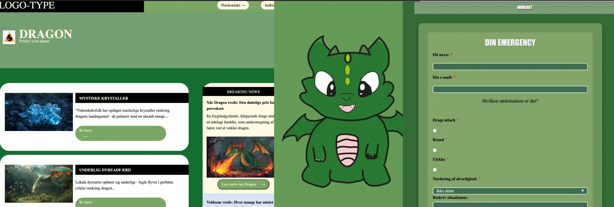

Brugergrænsefladeudvikling
HTML, CSS & JavaScript
Om Projektet
Brugergrænsefladedesign handler om tre hovedting: den visuelle del, hvordan man navigerer, og selve arbejdsflowet, som hjælper brugeren med at nå sine mål. Vi begyndte at lære JavaScript, da vi skulle anvende det i vores projekt “Emergency Site”. I dette tema skulle vi dykke dybere ned i, hvordan vi kunne forbedre vores knapper. Det handlede ikke kun om knapperne, men også om at tilføje forskellige effekter og at “lytte” til brugerens interaktioner.
Læringsmål
- Samle planlægning, design, udvikling og forbedring af digitale brugergrænseflader samt medieprodukter.
- Forståelse af brugerne og udførelse af brugertests for at forbedre design og brugeroplevelse.
- Teknologier og metoder til at skabe spændende og funktionelle brugergrænseflader.
- Organisering, produktion og præsentation af indhold med fokus på bæredygtighed, tilgængelighed og etik.
Emergency Site
Opgaven går ud på at skabe en nødhjemmeside. Fundamentet er allerede lagt. Temaet fokuserer på et enkelt element på siden, som endnu ikke er udviklet, jeg skulle arbejde på. Det var en kombination af visuelle elementer samt kode i CSS og JavaScript.
Processen
Brainstorming og skitsering
Jeg skulle brainstorm hvad min emergencysite skulle handle om og det kunne være alt muligt. Jeg fandt frem til at min emergencysite og begyndte og lave en sketch af min drage. Jeg startede og tegnede det med hånden så jeg kunne lave den om hvis der var noget der ikke passet. Da jeg fik tegnet min drage tog jeg et billedet af det og satte det ind i min Adobe Illustrator. Vi skulle lave vores infografik til en SVG så det var klikbart når vi skal begynde kode det ind.
Kodning
Efter at have lavet min drage i Adobe Illustrator, skulle jeg konvertere filen til en SVG, så vi kan bruge den til kodning. Her lærte vi, hvordan vi kan gøre vores infografik interaktiv. Jeg valgte dog ikke at gøre min drage klikbar, i stedet lagde jeg nogle bokse under dragen, så når man klikkede på den, ville der dukke en lille info op om dragen. Derefter skulle vi oprette flere pop-ups til vores nødsite og inkludere en formular til vores nødkontakt.